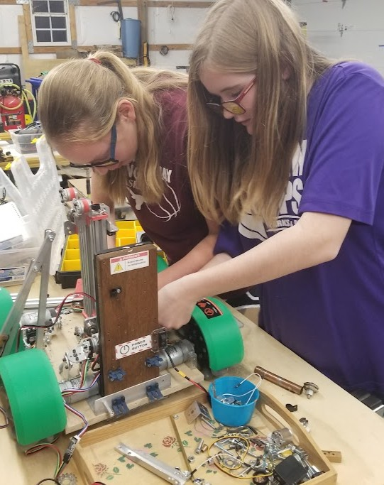
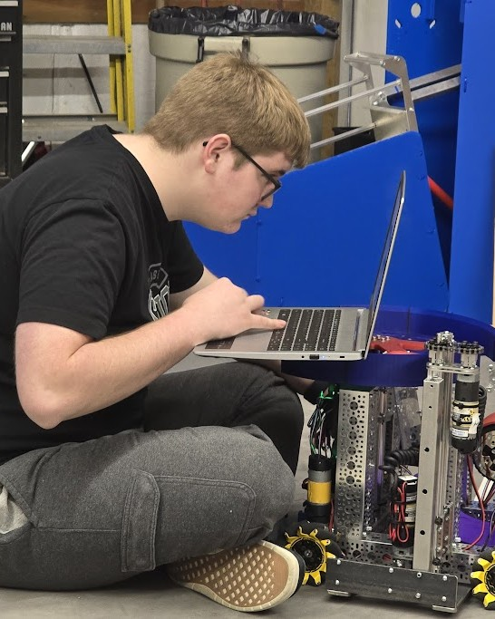
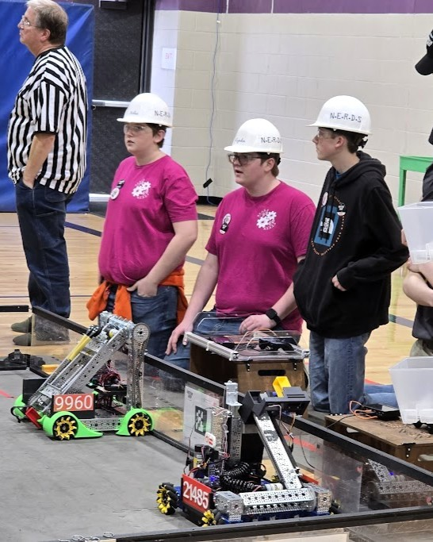
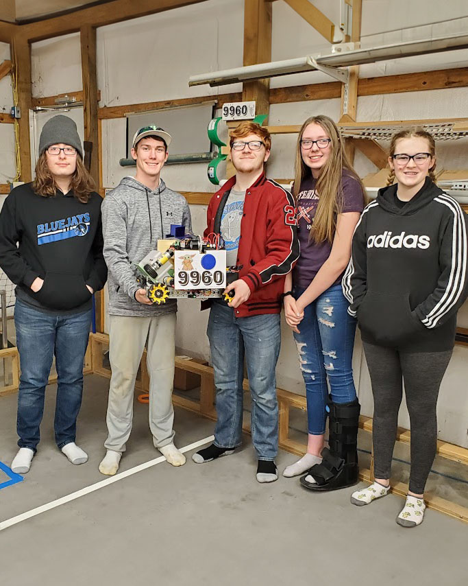

We're a student-led FTC team that designs, machines, codes, breaks, and rebuilds — every season, from scratch.




Students design in CAD, machine and 3D-print parts, wire electronics, and write the autonomous code. Mentors coach. They don't build the robot.
Each FTC season is roughly eight months of design, build, code, and competition. We treat every meet as a data point — what failed, what held up, what we'd redesign tomorrow.
We mentor younger teams, host community demos, and run STEM events. Robotics shouldn't be a city-only opportunity.
FTC's starting envelope is 18×18×18 inches. The game changes every September. Within those constraints, our students design a fresh robot every year — drivetrain, lift, intake, vision, control, and code, all chosen to suit that season's challenge.
Our most recent FTC season ran September 2025 through April 2026. Read the full recap — robot design, results, notebook, and photos — on the season's archive page.
DECODE, presented by RTX, was an artifact-shooting game. Robots collected color-coded artifacts from the field and launched them at scoring goals, with bonus points for matching color sequences. The endgame involved climbing onto a raised platform.
Replace this paragraph with a couple of sentences about how Team 9960's season went — what worked, what didn't, what the team's proudest of. Link to the full archive for everything else.
Middle and high schoolers welcome. We'll teach you CAD, code, machining, electronics, fundraising, outreach — whatever pulls you in. Recruiting timing varies by year, so reach out anytime to learn how to join.